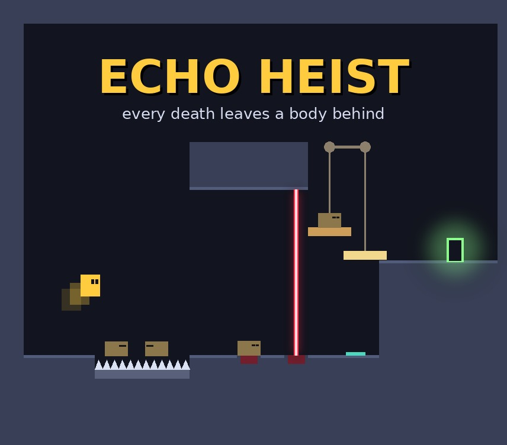

Echo Heist

Project Overview
The second project in EECS 494: Video Game Design and Implementation at the University of Michigan is a solo, two-week rapid prototype built around one new mechanic. Mine is Echo Heist, a puzzle platformer where every death leaves a body behind, and your past lives become the crew you need to pull off the heist.
Bodies are solid, heavy physics objects. They bridge spike pits, block laser beams, hold down pressure plates, and weigh down a counterweight lift. Each level only gives you a handful of lives, so every death is a decision: where you die matters as much as how you get through.
The game was made in Unity using C#.
My Contributions
This was a solo project, so I was responsible for the design and implementation of the whole game.
-
Core Mechanic: Bodies as Tools
When the player dies, a body is left exactly where they fell. It rests flush on top of spikes so later lives can walk across it, stacks on other bodies, and can be stood on as a step to reach ledges too high to jump to. A limited body count per level turns each death into a resource to spend carefully.
-
Puzzle Pieces
I built spikes, lasers that stop at the first solid object they hit, pressure plates that open matching doors only while every plate on their channel is held, and a counterweight lift where bodies on one platform raise the other. The lift counts only weight actually resting on it, including stacked bodies, and the player counts too, which leads to "outweigh yourself" puzzles.
-
Level Design
I designed eight levels that introduce one idea at a time, from a first spike pit to a finale that combines every mechanic. I removed on-screen hint text in favor of levels that teach through their layout.
-
Par and Medals
Based on playtest feedback that spare bodies cost nothing, I added a par for each level: clearing at or under par earns gold, one over earns silver, and more earns bronze. Best results are saved and shown on the level select. While testing, I found that a quick player can leap off the rising lift before their own weight drags it back down, and I kept that as skill tech required for gold on the lift levels.
-
Game Systems and Architecture
Systems communicate only through a publish/subscribe event bus, which kept the death, body, audio, and UI systems fully decoupled. Levels are authored in the Unity editor with Tilemaps and prefabs, and each attempt plays on a fresh copy, so restarting a level always resets it cleanly.
-
Menus, Audio, and Polish
I added a title screen with a level select, a full game loop with an out-of-bodies retry and a victory screen with final time and medal tally, a looping chiptune soundtrack, and sound effects for jumping, dying, plates, and clearing or failing a level.
Built With
Unity, C#, Unity 2D physics, Tilemaps, Unity UI, and a publish/subscribe event bus.